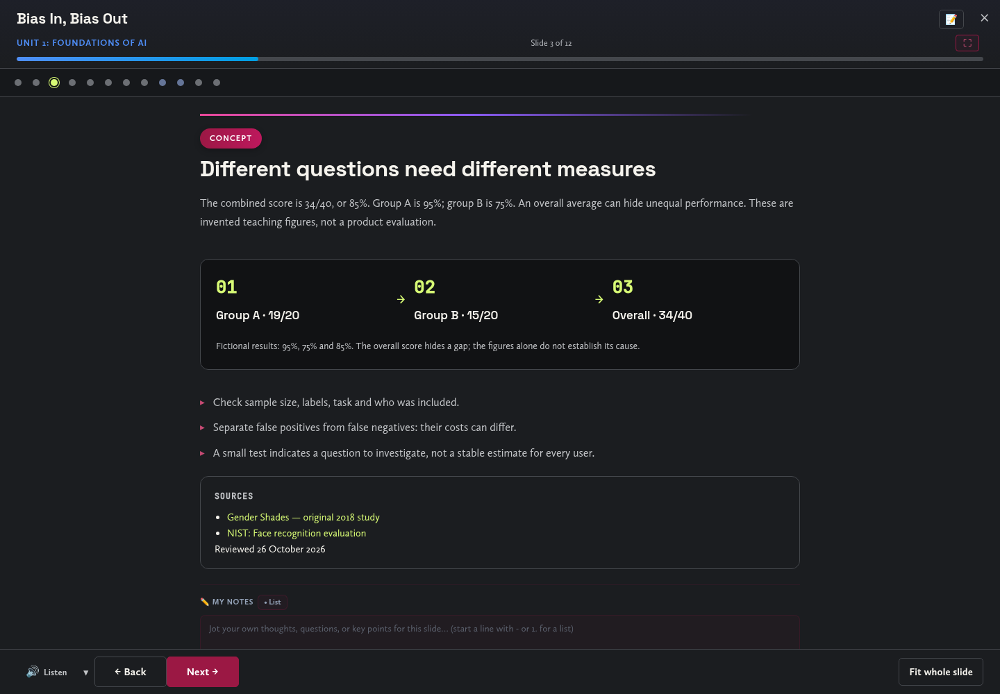
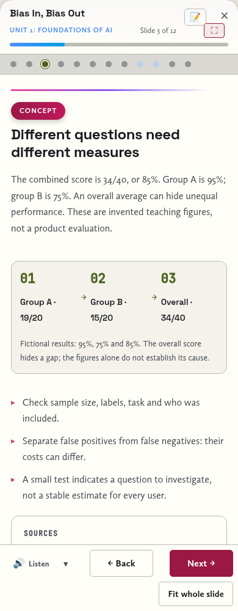

LESSON REFERENCE 1
Evidence task ↗Your AI Footprint
Map a fictional day's AI encounters as a transport map. Label data entering each station, decisions leaving it and one place the traveller can intervene.
AEP CONTENT & PLAYER REVIEW · 26 OCTOBER 2026
The existing AEP curriculum, refreshed for independent study. The course keeps its six units and 59 lessons, with clearer teaching, creative evidence tasks, current sources and a readable fullscreen player.
Bias: inspect the numbers Reasoning: test a schedule UCAS: preserve authorship AEP evidence portfolio
The automated browser sweep opens all 59 lessons and renders all 540 slides, including 25 interactive lab slides. It checks native fullscreen, browser fallback, keyboard navigation, answer reveals, saved work, legacy-response preservation, portfolio exports and offline deep links. Responsive checks cover 1440, 768 and 390 pixels in light, dark and high-contrast modes. Separate regression checks cover Removes, Passport and the project pathways.
This is an editorial and functional review, not a classroom trial or a full accessibility certification. Legal and product details remain date-sensitive. External videos require connectivity; their text alternatives and core tasks remain available offline. Labs are framed as simplified demonstrations, not evaluations of real products.
Desktop reading view

Phone reading view

59 lessons
Map a fictional day's AI encounters as a transport map. Label data entering each station, decisions leaving it and one place the traveller can intervene.
Create two contrasting museum labels for a fictional chatbot's convincing but false answer. Explain what each analogy illuminates and where it breaks down.
Invent a rule for sorting twelve drawn creatures. Reserve four unseen creatures, test the rule once, and explain one failure without quietly changing the test set.
Design a decision receipt for a fictional loan model. Distinguish information that helps a user challenge a decision from information that merely looks technical.
Build a tiny fictional dataset with a deliberate representation gap. Explain how the gap could affect outcomes, propose a repair and name a new problem the repair might create.
Trace an invented photo from upload to possible model use. Mark collection, permission, transformation and deletion questions; do not assume a service uses every upload for training.
Storyboard an autonomous-system dilemma twice, once from a consequences-first view and once from a duties-first view. Defend a choice and its cost.
Draw a three-stage oversight dashboard for a fictional medical scheduling assistant. Show who can inspect, stop and appeal an action, without pretending the exercise is medical advice.
Make a forecast-style map of five lesson claims: well supported, uncertain or contested. Explain what evidence would change the forecast for two claims.
Invent a simple tokenisation of two phrases. Show how different segmentation changes the number of chunks, then explain why your toy model is not an actual tokenizer.
Compare two imagined assistant workflows for a factual lookup and a multi-step puzzle. Design a test balancing correctness, latency and cost rather than assuming longer reasoning is better.
Draw a prompt as a building plan with purpose, context, constraints and checking. Test its weakest room with an ambiguous user request and redesign it.
Curate a tiny poem or poster with a complete contribution label: your choices, borrowed sources and any generated material. Identify a rights question you cannot settle from the output alone.
Choose a claim about AI changing work from the lesson. Turn it into a newsroom brief separating measured task exposure, predicted job change and evidence still needed.
Keep a first draft, two competing feedback comments and a revised draft. Annotate one accepted suggestion and one rejected suggestion with reasons connected to the writing's purpose.
Build a claim-to-source chain for one lesson statement. Record the original wording, the supporting passage and a limit; label inaccessible evidence rather than inventing verification.
Storyboard an assistant reading a fictional document containing an irrelevant instruction. Design the trust boundary and approval rule on paper; do not target a real system.
Draw a source-to-answer pipeline with retrieval, generation and citation checking. Add a plausible failure at each stage and show the user how to detect or handle it.
Make a permission card for an agent organising a fictional event. Separate read, draft and execute permissions; test what happens when a source requests an unauthorised purchase.
Produce a verification storyboard for a fictional viral clip with no source or date. Explain what provenance and corroboration could establish without generating an impersonation.
Write three short stakeholder testimonies about a fictional face-recognition proposal, then issue a decision with conditions, an alternative and an appeal route.
Make an annotated receipt separating hardware, training and inference costs. Mark missing measurements and compare a simpler alternative without inventing a universal cost per prompt.
Compare two approaches described in the lesson using the same use-case. Date your notes, distinguish law from proposals and specify which authoritative source needs checking before relying on the comparison.
Design a three-step browsing routine for a fast-moving claim. Add an example where polished writing and several copied reports would still fail your evidence test.
Create a neutral response plan for a fictional fabricated election announcement. Specify the original authority to check, a proportionate correction and a free-expression tradeoff.
Create three exhibition labels showing energy, hardware and human labour behind an AI service. For each, distinguish a documented example from an industry-wide claim.
Make a ledger for three hypothetical sources: your own notes, a licensed collection and an unlicensed article. Identify the questions raised by training, reproduction and attribution without inventing a legal ruling.
Redesign a fictional companion interface to support meaningful limits and human connection. Explain why reassurance, engagement and wellbeing are different design goals.
Write a short proposed policy for fictional AI companions, with age-appropriate access, data handling, escalation and review. Test it against a plausible loophole and revise it.
Analyse a policy excerpt from the lesson or a clearly fictional one. Colour-code explicit rules, assumptions and missing decisions, then identify the first clarification a pupil would need.
Create six fictional schoolwork scenarios and sort them into permitted, prohibited or needs clarification under a rule you state. Repair the rule when a boundary case exposes ambiguity.
Draft a policy pupils can act on: purpose, permissions, examples, responsibility and appeal. Annotate two places where plain wording prevents a real misunderstanding.
Stage a written hearing with three fictional stakeholders challenging your policy. Publish a decision log showing an accepted amendment, a rejected amendment and the reasons.
Build or sketch a tiny tool for one specific need. Keep the brief, a working example, a failure case and a revision; do not equate an attractive screen with a useful result.
Take a small creative idea through human brief, optional AI variation, selection and edit. Show exactly where your judgement changed the outcome and how you would acknowledge contributions.
Show three successive versions of a project problem, narrowing from a vague topic to an observable need. Add one stakeholder question that could reveal you chose the wrong problem.
Annotate a project sketch with data minimisation, access, consent and failure recovery. Explain a tradeoff where making one value stronger can make another harder to achieve.
Draw how input travels through your proposed project to an output. Label components, dependencies, storage and failure points, then identify the smallest testable version.
Write a project prompt, three test inputs and expected behaviours before running or simulating them. Change one instruction, compare results and explain the remaining uncertainty.
Draw your project's normal path and three awkward branches: missing input, contradictory input and unavailable service. Give each a useful recovery response rather than a silent failure.
Create one thin working slice or paper simulation of the project. Record what genuinely works, what is mocked and what evidence would justify the next stage.
Use the project criteria to write the strongest possible critique of your own prototype, or invite an authorised reviewer. Keep the feedback, your response and one visible change; label self-review honestly.
Choose the riskiest technical or design assumption in your project. Define a small test, predict the result and record what happened or what a paper simulation cannot establish.
Walk through one complete user journey. Find the first confusing step, capture it before and after a repair, and explain how you would check the change with a user.
Design three repeatable tests for your project's main function. Record pass criteria, observed results and an unresolved failure, keeping simulated and real results separate.
Inspect one project interaction for keyboard access, readability and understandable feedback. Make a specific improvement and document a check that could reveal it still fails.
Prepare a project release note with one demonstrated capability, one known limitation, a test record and a recovery plan. Resist promising anything you have not checked.
Audit your project through a fictional user's difficult case. Map the risk, affected person, safeguard, residual risk and who is responsible for the next decision.
Build a five-frame pitch and tag each factual claim as measured, sourced or assumed. Rewrite the weakest claim and finish with a precise next-step request.
Deliver or script a three-minute rehearsal, then answer three sceptical questions. Compare the result against your criteria and record a substantive revision rather than only a visual polish.
Invent a graduate task with an AI-assisted first pass and a human verification step. Explain which capabilities an employer could actually observe and which the polished output would conceal.
Map a learning task into steps you did, AI did and you checked. Repeat a small part unaided and use the comparison to decide where assistance helped or displaced learning.
Present or record the project for a defined audience. Keep the argument, strongest evidence and response to one challenge, marking untested claims as open questions.
Adapt the same project for a different audience with different needs. Show what changed in the explanation, what evidence stayed constant and one new objection you addressed.
Write five probing questions about your project, choose three without preparation and answer them with the artefacts closed. Reopen the evidence and correct one answer explicitly.
Defend your project under a changed constraint: half the budget, no AI tool or a new user need. Explain which decisions survive and which you would redesign.
Write a fictional application paragraph, then annotate which claims require personal evidence and which phrases sound generic. Revise for specific, supportable experience without inventing achievements.
Choose an early idea and a current view. Build a three-part exhibit showing the change, the evidence that caused it and a question you still cannot answer.
Write five practical commitments about learning, truth, privacy, creativity and responsibility. Test each against a difficult fictional example and revise the weakest rule.
Recent timeline entries also link to their release documents, papers or official reports.